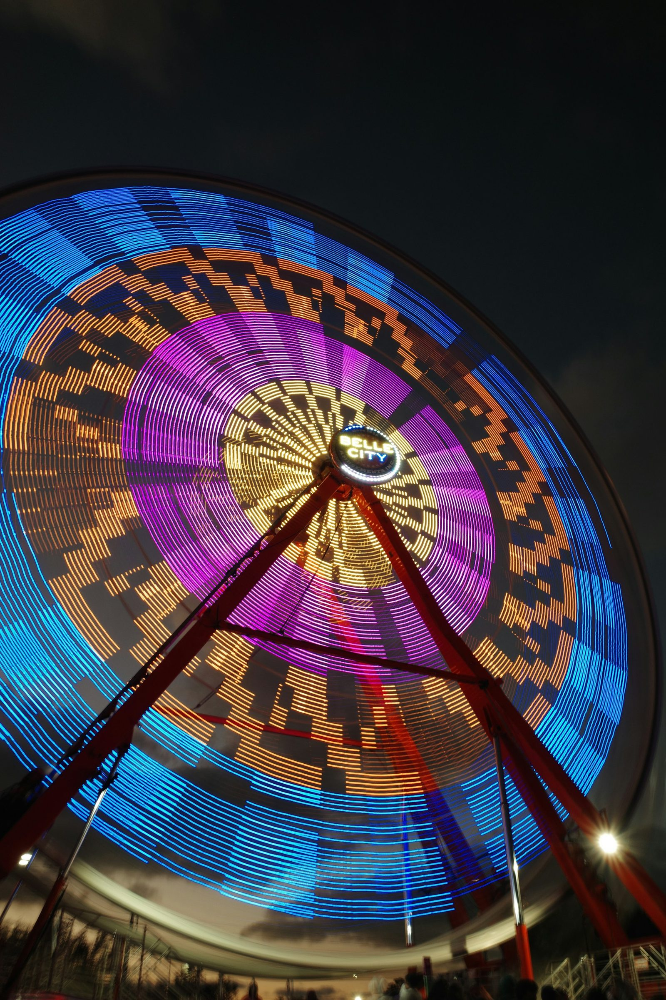
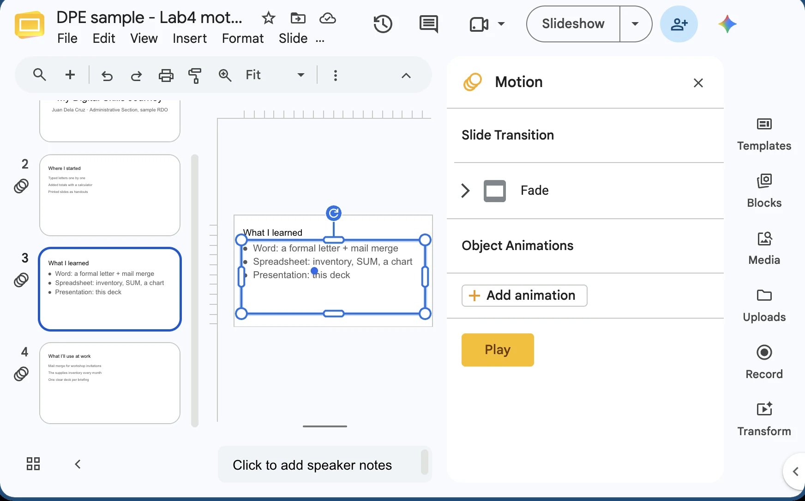
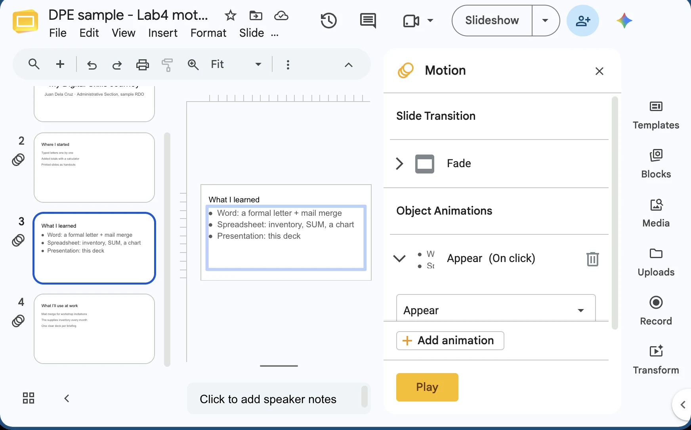
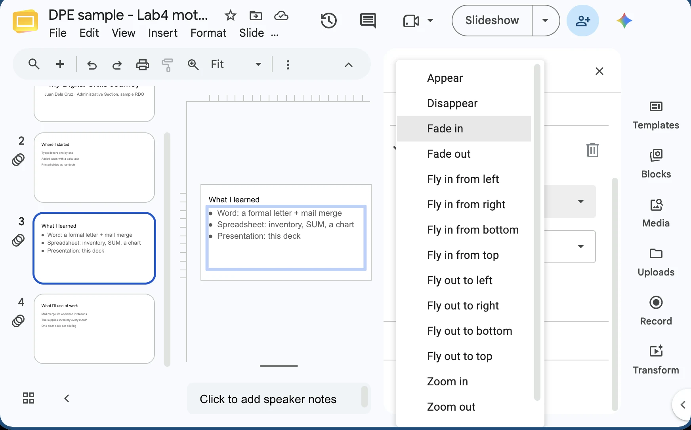
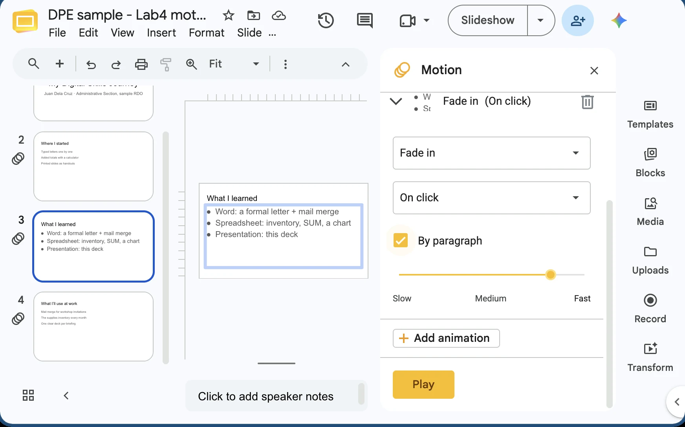
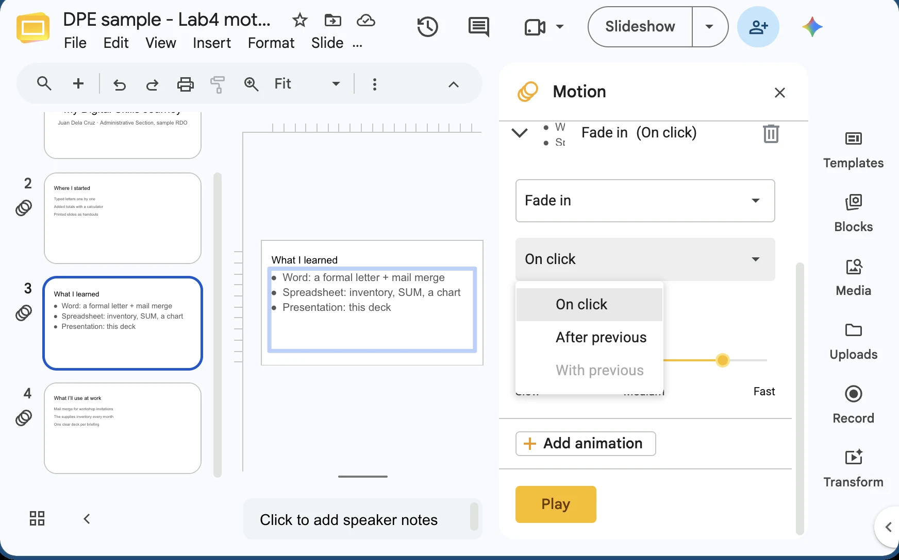
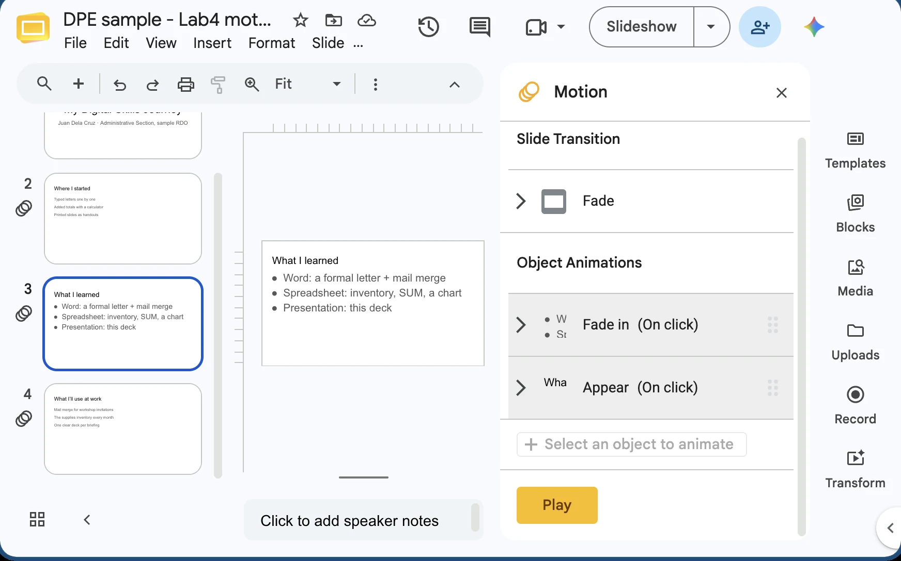
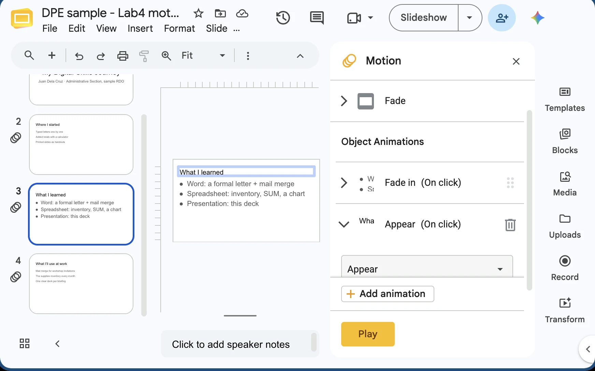
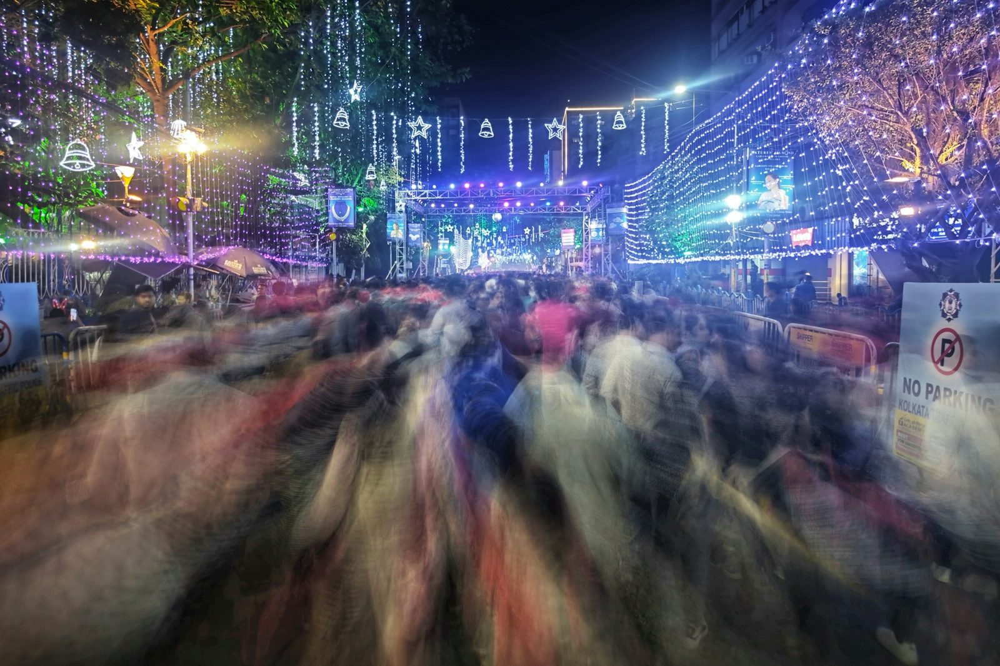

Module 4 · Multimedia Presentation Fundamentals
Motion that helps your audience follow you, not motion that makes them dizzy.

Welcome back po. Our "My Digital Skills Journey" slides already have text, pictures and a chart from our spreadsheet. Now we add motion.
The Ferris wheel at the perya is fun to ride for five minutes. Nobody wants to ride it for a whole report. That's today's lesson: a little motion helps, too much makes people dizzy.
In about 25 minutes I'll show you how to put one transition on all slides, and how to animate a bullet list one item at a time.
By the end of this topic
Between slides vs on a slide, and the three animation types.
A subtle effect, applied the same way on every slide.
One item per click, sensible duration, checked in the Animation Pane.
Three goals. First, the vocabulary: transition and animation are not the same thing, and the menus are different.
Second, the rule in the callout. Read it out loud: transitions must be uniform, meaning the same effect on every slide.
Third, control: bullets that appear one at a time when you click, with timing that doesn't make the audience wait. I'll show each step on our "My Digital Skills Journey" deck.
The big idea
Many of us made flipbooks in grade school, drawing on the corner of a notebook. The page is the slide. How you turn the page is the transition. The drawing that moves is the animation.
Ask: "If every page of a book opened differently, one from the top, one sideways, one upside down, would you enjoy reading it?" No. That's why we use one transition for the whole deck.
Watch the difference · live
These two boxes are moving right now. On the left, the whole slide changes from the title slide to "Where I started": that's a Fade transition.
On the right we never leave the slide; the bullets appear one by one: that's an Appear animation.
Ask: "Have you sat through a deck where everything spun and flew in?" It usually had both, all at once. Remember the quick test at the bottom; it tells you which tab to open.
Choose subtle · live
Here are three effects playing live. Fade and Push are transitions; Appear is an animation for objects on a slide. All three are calm and quick.
PowerPoint groups its transitions into Subtle, Exciting and Dynamic Content. For office reports, stay in Subtle. The "Exciting" ones like Vortex or Origami are fun for a birthday slideshow, not for a report to the section chief.
Ask: "Which of these three would you pick for a report to your section chief?"
Animations · live
The object arrives. Use it to reveal the next point when you're ready to talk about it.
The object is already there and pulses or changes colour. "Look here!"
The object leaves. Rarely needed; use it to clear space for the next item.
Point to each box as it plays. The figure is the grand total of our office supplies inventory from Module 3, ₱22,039.
Entrance brings it in. Emphasis makes it pulse while it stays, perfect when you say "and this is the number that matters." Exit takes it away.
In PowerPoint's Animations gallery, entrance effects have green stars, emphasis yellow, exit red. Most of the time you only need entrance effects.
Same idea, three apps
| App | Transitions | Animations |
|---|---|---|
| Microsoft PowerPoint | Transitions tab → pick an effect → Apply To All | Animations tab → pick an effect → Animation Pane to check order |
| Google Slides | Slide › Transition opens the Motion panel → Apply to all slides | Select an object → Insert › Animation (same Motion panel) |
| LibreOffice Impress | Sidebar → Slide Transition panel → Apply Transition to All Slides | Sidebar → Animation panel → + to add an effect |
Most office desktops have PowerPoint, so I'll demo there, but the idea is the same everywhere.
In Google Slides, both live in one Motion panel; you open it from Slide › Transition or Insert › Animation. In LibreOffice Impress, they're panels on the right-hand sidebar.
Show the Shift+F5 shortcut now: it starts the show from the slide you're on, so you can test one slide without clicking through the whole deck.
Animate a list





Google Slides Motion panel (Insert › Animation), sample file. PowerPoint: Animations tab, Effect Options › By Paragraph, Start box.
Press Next to walk the five screens (Google Slides, sample file). The "Transitions vs animations" slide already showed what the audience sees: one bullet per click.
Then demo in PowerPoint. The trick is to select the whole text box by clicking its border, not the text inside. With By Paragraph, each bullet gets its own click.
Google Slides calls it Fade in and has a By paragraph box; PowerPoint has Appear and Fade under the Animations tab and Sequence: By Paragraph under Effect Options. In Impress, the Animation panel has the same idea under its effect options.
Timing · live
| Start option | What happens |
|---|---|
| On Click | Waits for your click. Best for bullets you talk about. |
| With Previous | Plays at the same time as the item before it. |
| After Previous | Plays by itself right after the item before it ends. |
How long one effect takes. About 0.5 s feels smooth; 2 s feels slow.
Wait time before it starts, e.g. 0.5 s after the title.
Each bar is one effect lasting 0.5 s. The red line plays through them.
Three settings sit on the right side of the Animations tab: Start, Duration and Delay.
Walk the timeline: one click starts the title; bullet 1 follows by itself; bullet 2 waits half a second; the chart plays with bullet 2, at the same time.
For a live talk, use On Click for anything you explain. Automatic timing is handy for a looping photo slideshow at a fiesta booth, where no one is clicking.


Google Slides Motion panel, sample file. In PowerPoint the same list is the Animation Pane: numbered items, Play From, up and down arrows.
Your control room
Check: the numbers on the slide match the pane. Impress: the Animation sidebar list.
When a slide has more than two animations, open the Animation Pane. It's a list of every effect on the slide, in the order they'll play. Press Next to walk the three screens (Google Slides, sample file).
Here the title animation sits after the bullets, so it plays last: drag it to the top. In PowerPoint, select it in the pane and use the up arrow; the little numbers beside the bullets change to match.
If an effect plays at the wrong time, this is where you fix it. If you added one by accident, select it and press Delete (Google Slides: the bin icon).

Less is more
A busy fiesta street is fun to walk through, but try reading a notice in that blur. Too much motion does the same to a slide.
Go through the list. The worst offender is sound effects: over Zoom or Meet they can be loud, delayed, or cut off entirely.
Repeat the rule of thumb slowly; it's the safest guide for any report to your section chief.
Space or K plays and pauses (or click the video). C turns captions on or off; the speed button offers 1.25× and 0.85×. The arrows still move between slides, and the video pauses when you leave this slide.
Length 4:50. Pause anywhere to take a question; captions stay on screen for anyone without sound.
After the video, take one or two questions before the quick check.
Quick check · click an answer
Let them type A, B, C or D in the chat first, then click the options to reveal. The answer is B.
If many chose A, go back to the flipbook: a transition is turning the page, an animation is something moving on the page. Bullets live on the page.
Recap · Topic 4.5
Between slides. One subtle effect, Apply To All, the same on every slide.
On a slide. Entrance, emphasis, exit; bullets By Paragraph, On Click.
About 0.5 to 1 second, checked in the Animation Pane. No sound effects.
Next · 4.6 Adding Media Clips: video, music and narration, and making sure they play on the day.
Summarize: transitions between slides, animations on a slide, and less is more.
Before moving on, ask in the chat: "Which button puts one transition on every slide?" Answer: Apply To All.
Bridge to 4.6: "Our slides now move. Next, let's make some of them play: a short video, background music, or your own voice."